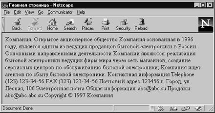

Заголовки обозначают начала разделов документа. В стандарте определено 6 уровней заголовков: от Н1 до Н6. Текст, окруженный тэгами <Н1></Н1>, получается большим - это основной заголовок. Если текст окружен тэгами <Н2></Н2>, то он выглядит несколько меньше (подзаголовок); текст внутри <НЗ></НЗ> еще меньше и так далее до <Н6></ Нб>. Некоторые программы, позволяют использовать большее число заголовков, однако реально более трех уровней встречается редко, а более 5 - крайне редко.
Стандарт языка насчитывает 11 атрибутов у тэга заглавие. Рассмотрим только АLIGN, т.к. остальные в большинстве программ интерпретаторов не реализованы.
Для разбиения текста на параграфы используется тэг <Р> в нем используются те же атрибуты что и заголовках.
В качестве примера рассмотрим создание домашней страницы фирмы по продаже бытовой электроники.
<HTML> <HEAD> <TITLE> Главная страница</TITLE> </HEAD> <BODY> Компания. Открытое акционерное общество Компания основанная в 1996 году, является одним из ведущих продавцов бытовой электроники в России. Основными направлениями деятельности Компании являются: реализация бытовой электроники ведущих фирм мира через сеть магазинов; создание сервисных центров по обслуживанию бытовой электроники; Компания ищет агентов по сбыту бытовой электроники. Контактная информация Telephone (123) 123-34-56 FAX (123) 123-34-56 Почтовый адрес 123456 г. Город, ул Лесная, 106 Электронная почта Общая информация: abc@abc.su Продажи: abc@abc.abc.su Copyright љ 1997 Компания </BODY> </HTML>

Рис. 1.3. Пример текста без разметки
Броузер покажет нам этот HTML-документ в виде непрерывного текста.
Щелкните здесь, чтобы просмотреть пример 1.3 в браузере
Атрибут АLIGN. Атрибут АLIGN позволяет выровнять текст по левому или правому краю, по центру или ширине. По умолчанию текст выравнивается по левому краю. Данный атрибут применим также к графике и таблицам.
Следующая таблица определяет возможные значения атрибута АLIGN:
| Значение | Описание применения |
| Left | Выравнивание по левому краю |
| Right | Выравнивание по правому краю |
| Justify | Выравнивание по левому и правому краям |
| Сеnter | Центрирование |
Значение Justify реализовано не во всех программах интерпретации.
Выравнивание по левому краю
По умолчанию текст HTML выравнивается по левому краю и не выравнивается по правому, то есть начало строк находится на одном уровне, а концы на разных. Чаще всего, получающийся при этом текст с равными промежутками между словами выглядит лучше. Поскольку выравнивание по левому краю задается автоматически, атрибут АLIGN=LEFT можно опустить.
Выравнивание по правому краю
Текст, выровненный по правому краю и не выровненный по левому - концы строк находятся на одном уровне, а начало на разных, - часто применяется на практике, хотя бы с целью создать оригинальный дизайн. Этот эффект достигается заданием атрибута АLIGN=RIGHT в обычных тэгах, например в тэге <Р>.
Центрирование текста и графики
Есть несколько способов отцентрировать текст или графику. В спецификациях HTML 3.0 предлагается пользоваться тэгом <АLIGN=СЕNТЕR>. Однако этот тэг применим не для всех объектов HTML-страницы, поэтому Netscape добавил тэг <СЕNТЕR>, который центрирует любые объекты и поддерживается броузерами Netscape Navigator, Microsoft Explorer и некоторыми другими. К тэгу <СЕNТЕR> нужно относиться с осторожностью. Какой-нибудь броузер может его вообще проигнорировать, и на странице окажется выровненный по левому краю текст.
Оборачивание
С помощью атрибута ALIGN= вы можете <обернуть> текст вокруг графического объекта. Для этого поместите тэг <IMG SRC="/путь/файл.gif"> в том месте, где должен быть графический объект, и добавьте атрибут ALIGN=LEFT, ALIGN=RIGHT или АLIGN=CENTER. Кроме того, с помощью атрибутов НSPAСЕ= и VSPАСЕ= (они описываются ниже ) задается ширина горизонтальных и вертикальных полей, отделяющих изображение от текста. Можно также создать рамку вокруг картинки или обрамление таблицы текстом.
Вообще говоря, СLEAR является общим для всех блочных тэгов (заглавия, параграфы и т.п.), однако реализован далеко не для всех из них.. СLEAR может принимать следующие значения:
| Значение | Назначение |
|---|---|
| left | Пропустить картинку, расположенную у левого края листа |
| right | Пропустить картинку или таблицу, расположенную у правого края листа |
| аll | Прервать отображение текста перед картинкой или таблицей и продолжить ниже |
В атрибуте СLEAR можно указать и численные значения:
<Р СLEAR="100 рiх">
Данная запись означает пустое горизонтальное поле высотой в 100 пиксельных строк.
Расставим тэги заголовков с атрибутами в нашем примере.
<HTML> <HEAD> <TITLE> Главная страница</TITLE> </HEAD> <BODY> <H1 ALIGN=CENTER>Компания.</H1> <H3 ALIGN=LEFT>Открытое акционерное общество Компания основанная в 1996 году, является одним из ведущих поставщиков бытовой электроники в России.</H3> <H4 ALIGN=RIGHT>Основными направлениями деятельности Компании являются: реализация бытовой электроники ведущих фирм мира через сеть магазинов; создание сервисных центров по обслуживанию бытовой электроники; </H4> <H3> Компания ищет агентов по сбыту бытовой электроники.</H3> <H5 ALIGN=CENTER>Контактная информация Telephone (123) 123-34-56 FAX (123) 123-34-56 Почтовый адрес 123456 г. Город, ул Лесная, 106 Электронная почта Общая информация: abc@abc.su Продажи: abc@abc.abc.su Copyright љ 1997 Компания</H5> </BODY> </HTML>
Рис. 1.4. Текст с использованием тэгов заголовков
Результат мы можем видеть на экране.
Щелкните здесь, чтобы просмотреть пример 1.4 в браузере
Принудительный перевод строки используется для того, чтобы нарушить стандартный порядок отображения текста. При обычном режиме интерпретации программа интерфейса пользователя отображает текст в рабочем окне, автоматически разбивая его на строки. В этом режиме существующие в тексте концы строк игнорируются. Иногда для большей выразительности требуется начать печать с новой строки. Для этой цели и используется тэг ВR. Атрибут СLЕАR= в тэге <ВR> используется для того, чтобы остановить в указанной вами точке обтекание текстом объекта и затем продолжить текст в пустой области за объектом. Продолжающийся за объектом текст выравнивается в соответствии со значениями LEFT, RIGHT или АLL атрибута СLЕАR=:
| <BR СLЕАR =LЕFТ> | Текст будет продолжен, начиная с ближайшего пустого левого поля |
| <BR СLЕАR =RIGHT> | Текст будет продолжен, начиная с ближайшего пустого правого поля |
| <BR СLЕАR=АLL> | Текст будет продолжен, как только и левое, и правое поля окажутся пустыми |
Тэг <NОВR> (Nо Вrеаk, без обрыва) дает команду броузеру отображать весь текст в одной строке, не обрывая ее. Если текст, заключенный в тэги <NОВR>, не поместится на экране, броузер добавит в нижней части окна документа горизонтальную полосу прокрутки. Если вы хотите оборвать строку в определенном месте, поставьте там тэг <ВR>.
Тэг добавляет поля слева и справа от текста. Это полезный тэг, поскольку он позволяет расположить текст компактно в центре страницы. При использовании < ВLОСKQUOTE > несколько раз текст все больше сжимается к центру.
Microsoft Internet Explorer и Netscape Navigator допускают применение атрибутов LEFTMARGIN=n и ТОРМАRGIN =n в тэге <ВОDY>. Атрибут LEFTMARGIN = задает левое поле для всей страницы. ТОРМАRGIN= определяет верхнее поле. Число n показывает ширину поля в пикселях. Например, тэг < ВОDY LEFTMARGIN ="40"> создаст на всей странице левое поле шириной 40 пикселей. При n, равном 0, левое поле отсутствует.
Потребность в этом средстве существовала уже очень давно, но лишь недавно оно было, наконец, предложено разработчикам.. Табуляцию можно задать несколькими способами.
Самый простой - записать тэг <ТАВ IDENT=n>, где n определяет число еn-пробелов перед новым абзацем. Еn-пробел - это типографская единица измерения, приблизительно равная ширине буквы n в том шрифте, который вы используете. Таким образом, тэг <ТАВ IDENT=4> задает символ табуляции шириной в четыре еn-пробела.
Если вы хотите в нескольких местах применить символ табуляции заданной величины, то в том месте, где вы задаете его размер, поместите тэг <ТАВ> с атрибутом ID=, например, таким образом:
<ТАВ ID="tabone" >
Теперь в любом месте страницы достаточно написать <ТАВ ТО="ТАВОNЕ">, и символы табуляции станут равными ТАВОNЕ. Соответственно можно аналогичным образом создать ТАВТWО, ТАВТНRЕЕ, ТАВFОUR и т. д.
Чтобы создать более сложный дизайн, можно применить с тэгом <ТАВ> атрибут ALIGN=. При задании АLIGN=LЕFТ или ALIGN=RIGHT текст, следующий за тэгом <ТАВ> (вплоть до ближайшего обрыва строки или тэга), будет выровнен по левому или правому краю соответственно. При задании АLIGN=СЕNTER текст центрируется относительно табулятора на задаваемое тэгом <ТАВ> число еn-пробелов.
Тэг <ТАВ> можно применять для размещения и текста, и графики.
Горизонтальное отчеркивание (horizontal rule) применяется для разделения документа на части. С помощью одного лишь тэга <НR> можно придать странице совершенно необычный вид. Попробуйте поэкспериментировать с тэгом <НR>и вы получите линии, совсем не похожие на те, которыми вы обычно пользуетесь.
Отображение текста без форматирования.
Тэг <BLINK> вызывает мерцание текста заключенного в него. Браузер Internet Explorer не поддерживает этот тэг.
Назад | Содержание | Вперед